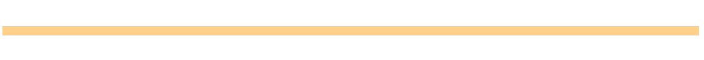

¿Cuál es el objetivo en este caso?
Garantizar una vida sana y promover el bienestar de toda a todas las edades.
¿Por qué?
Garantizar una vida sana y promover el bienestar de todas las edades es importante para la construcción de sociedades pacíficas y sostenibles. A pesar de los importantes avances que se han hecho en los últimos años en la mejora de la esperanza de vida y en la reducción de algunas de las causas comunes de mortalidad infantil, persisten profundas desigualdades en el acceso a la asistencia sanitaria.
¿Qué progresos hemos logrado hasta ahora?
Se han hecho grandes progresos en aumentar el acceso al agua potable y a instalaciones de saneamiento, así como en el de la lucha contra el VIH/SIDA, la malaria y otras enfermedades.
Desde 1990, la mortalidad materna se ha reducido casi en un 50 % y entre 2000 y 2016, la tasa de mortalidad de menores de 5 años disminuyó en un 47 %, pasando de 78 muertes por cada 1000 nacidos vivos en 2000 a 41 en 2016. Sin embargo, es necesario mejorar el acceso a servicios médicos esenciales y reducir riesgos ambientales.
¿Qué puedo hacer para ayudar ?
Todos podemos apoyar para promover y participar en programas para la salud y el bienestar de nuestras comunidades, en especial para quienes más lo necesitan. Desde organizarnos en nuestra comunidad para crear conciencia hasta comprender mejor el valor de la salud y la seguridad, podemos marcar una diferencia al abogar por un acceso a servicios de salud de calidad.


RETOS Y DESAFIOS QUE ATRAVESAMOS
El ODS 3 busca garantizar una vida sana y promover el bienestar para todos, pero enfrenta varios desafíos. A nivel local, las comunidades enfrentan barreras en el acceso a servicios de salud de calidad. A nivel nacional, las políticas de salud deben superar problemas como la falta de infraestructura y recursos. Internacionalmente, la cooperación entre países es clave para abordar desigualdades sanitarias y emergencias globales, como pandemias. A pesar de los avances, estos obstáculos siguen siendo un reto importante para alcanzar el bienestar y la salud global.
Nivel Local
En las comunidades locales, el acceso a servicios de salud de calidad sigue siendo un desafío importante. Las barreras económicas, geográficas y sociales dificultan que muchas personas puedan recibir atención médica adecuada, lo que subraya la necesidad de fortalecer programas comunitarios enfocados en el bienestar.
Nivel Nacional
A nivel nacional, los sistemas de salud enfrentan problemas relacionados con la insuficiencia de infraestructura y la escasez de recursos humanos y financieros. Esto exige el diseño y la implementación de políticas públicas más efectivas que permitan cubrir la creciente demanda y garantizar un acceso equitativo a los servicios sanitarios.
Nivel Mundial
En el ámbito global, las desigualdades sanitarias entre países desarrollados y en desarrollo son evidentes. La cooperación internacional es fundamental para responder a emergencias globales, como pandemias, y para compartir tecnologías, investigaciones y recursos que permitan mejorar la salud de manera equitativa en todo el mundo.
Cuida tu Salud
Cinco acciones que dependen de ti para una buena salud
1 - Hidrátate adecuadamente
Las funciones que desempeña el agua en nuestro organismo son numerosas. Regula la temperatura corporal, transporta nutrientes y oxígeno a las células y colabora en la conversión de alimentos en energía. Además participa en la eliminación de toxinas.Es importante que tengas en cuenta que la ingesta de agua debe realizarse en forma gradual durante el día. En caso de que te resulte difícil incorporar este hábito, puedes beber, al menos, un vaso de agua en cada comida (desayuno, almuerzo, onces y cena) y otros cuatro vasos durante el resto del día. Además, la ingesta de frutas como la sandía, la piña o la naranja te permitirán incorporar más agua a tu organismo.
2 - Respeta tus horas de descanso
La calidad y la cantidad de tus horas de descanso determinarán el desarrollo de toda tu rutina. Durante el sueño, se cumplen procesos fisiológicos que permiten la regeneración de las fuentes de energía necesarias para el rendimiento físico y mental. Es fundamental que respetes tus horas de descanso para mantener tu salud y bienestar. Desconéctate de toda tecnología al menos una hora antes de acostarte y duerme entre 7 u 8 horas diarias. Además, ten en cuenta que siempre es conveniente mantener un horario regular, es decir, acostarte y levantarte todos los días a la misma hora aproximadamente.
3 - Atiende qué y cuánto comes
Come lo necesario: evita seguir comiendo una vez que te sientas saciado. Es tan importante la calidad de lo que comes, como la cantidad. El exceso te conducirá al sobrepeso, con todas las consecuencias que esto implica. Además, una alimentación saludable debe incluir proteínas, hidratos de carbono y grasas saludables en proporciones adecuadas. Este es uno de los puntos más importantes en el camino hacia tu salud y bienestar. Llevar una dieta basada en plantas o de origen vegetal te permitirá disminuir la incidencia y la gravedad de enfermedades como la obesidad, la hipertensión, la hiperlipidemia, la hiperglucemia o la diabetes tipo 2.
4 - Iniciativas de salud ambiental
Los lugares donde las personas viven y trabajan pueden tener un impacto importante en la salud pública ya que influye en temas como el aire limpio y agua potable, o alimentos. Los contaminantes ambientales se han relacionado con múltiples problemas de salud. Las iniciativas de salud ambiental van desde programas de uso compartido de vehículos y regulaciones de seguridad alimentaria hasta esfuerzos de limpieza comunitaria por ejemplo la Agencia de Protección Ambiental (EPA) emplea el programa Superfund el cual es uno de los ejemplos más conocidos de una iniciativa de salud ambiental para limpiar áreas contaminadas con materiales peligrosos. .
5 - Tecnología y telesalud
La tecnología sanitaria y la telemedicina tienen el potencial de eliminar barreras a la atención médica en muchas comunidades, especialmente en áreas rurales o de bajos ingresos que a menudo tienen menos proveedores de atención médica disponibles.Es probable que la atención médica remota se vuelva cada vez más común en las iniciativas de salud comunitaria, y los profesionales de la salud pública serán vitales para garantizar que las tecnologías sanitarias emergentes se utilicen en su máximo potencial.Cuando las personas pueden ponerse en contacto fácilmente con un proveedor pueden hacer preguntas, discutir los síntomas y tomar las medidas adecuadas para abordar los problemas de salud.
Te interesa saber mas sobre las acciones que puedes realizar para contribuir al objetivo
Campaña de Alimentación Saludable
Promover hábitos alimenticios saludables entre los estudiantes, educándolos sobre la importancia de una dieta balanceada.
Retos de Actividad Física y Movimiento
Motivar a los jóvenes a hacer ejercicio regularmente mediante retos divertidos y accesibles.
Programa de Salud Mental y Mindfulness
Promover el bienestar emocional a través de la práctica de mindfulness y otras técnicas de manejo del estrés.

Jornada de Voluntariado y Apoyo Comunitario
Fomentar la responsabilidad social y el bienestar emocional de los estudiantes mediante actividades de voluntariado comunitario.
Primeros Auxilios
Capacitar a los estudiantes en técnicas básicas de primeros auxilios para actuar adecuadamente en emergencias.
Educación sobre Salud Sexual y Reproductiva
Proyecto educativo que promueve la salud sexual y reproductiva con información clara para jóvenes.
¿como se relacionan los ods?
Los 17 Objetivos de Desarrollo Sostenible, también conocidos como ODS, marcan la ruta de la Agenda 2030, un plan global adoptado por 195 Estados Miembros de las Naciones Unidas para lograr un mundo sin pobreza, en el que se protege el medio ambiente y donde todas las personas gocen de paz y una vida próspera.
¿Son ambiciosos? Sí. Por eso requieren del compromiso y la acción de todas las personas para poder hacerse realidad. Esta es una tarea donde todos los sectores –el público, el privado y la sociedad civil– tienen un rol que cumplir. Los 17 ODS no pueden ser vistos aislados unos de otros; todos están relacionados y su naturaleza es colaborativa.

“Alcanzar el desarrollo sostenible requiere de alianzas sólidas entre quienes comparten una visión y objetivos que colocan a las personas y el planeta en el centro."
Igor Garafulic, Coordinador Residente del Sistema de Naciones Unidas en el Perú